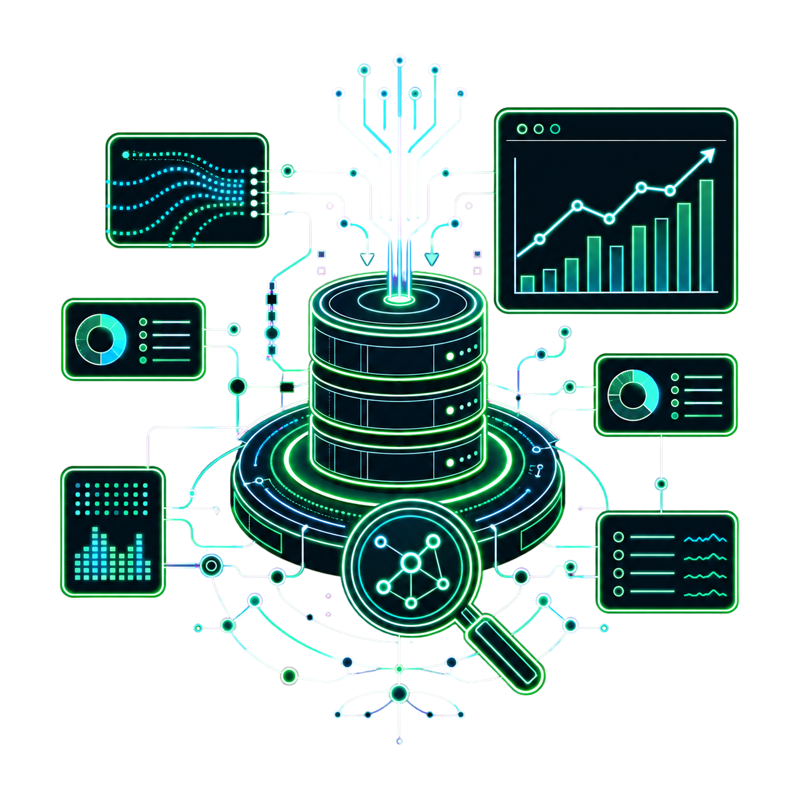

Industrial Integration
A resilient integration layer connecting industrial equipment, edge services and operational applications.

Summary
Reliable industrial software is a chain of explicit boundaries. Collection, validation, queuing, transfer, ingestion and presentation each need a clear responsibility so that a temporary failure does not become a misleading operational result.
Problem and response
Industrial sources and operational applications often differ in timing, shape and availability. The response is a staged data path with validation before persistence, local queueing for interruption tolerance, and a visible handoff into reporting and mobile surfaces.
- Separate collection from server-side ingestion.
- Validate records before they become operational reporting inputs.
- Use local queueing and secure transfer as recovery-aware boundaries.
Architecture and data flow
This public-safe flow contains no IP addresses, ports, private hosts or credentials.
Reliability and security
- Keep transient availability problems distinct from invalid data.
- Make queue and recovery states reviewable by operators and engineers.
- Use least-detail public diagrams so the engineering pattern is legible without publishing deployment topology.
Technology lens
Python services, API boundaries, networking, validation and recovery-aware workflows describe the public implementation themes.
Public boundary
This public case study uses sanitized architecture and representative data. Operational credentials, private records and proprietary implementation details are excluded.
See how the integration pattern supports production intelligence.
RELATED: PRODUCTION INTELLIGENCE